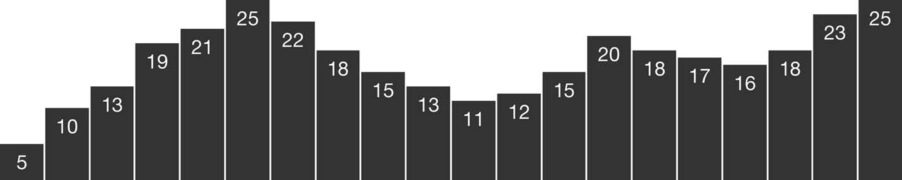

資料可視化
Chapter 01
Introduction
Why Data Visualization?
原始數據(Raw data)變得有用，當我們 使用方法 從中獲得洞察力。
可視化(Visualization)是將資訊(information)映射到視覺效果(visuals)的過程。
制定規則來解釋數據，並將其值(values)表達為視覺屬性(visual properties)。
下面直條圖根據的規則：較大的值，映射為較高的直條(bars)。

Why Interactive?
“Visual Information-Seeking Mantra 真言”:
- overview first,
- zoom and filter,
- then details-on-demand.
What This Book Is

This book is a practical introduction to merging three practices—
- data visualization,
- interactive design, and
- web development
—using D3, a powerful tool for custom, web-based visualization.
Who You Are
Beginner!
What This Book Is Not
Not intended to teach web technology (HTML, CSS, JavaScript, SVG) in depth.
My goal is to teach you the fundamental concepts and methods of D3.
Using Sample Code
GitHub releases page.
You are welcome to copy, adapt, modify, and reuse the example code in these tutorials
for any noncommercial purpose.
終了。 しゅう りょう。 Let's call it a day.
終わりましょう。 Let's get done with this.
終わりにしましょう。 Let's finish this.